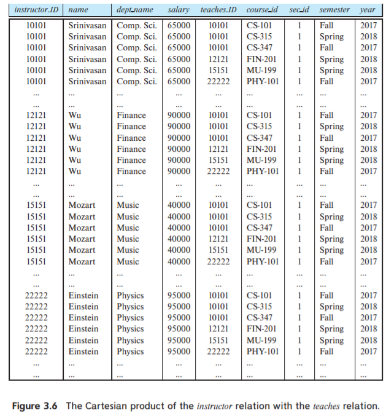
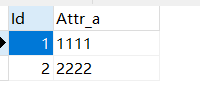
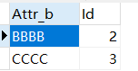
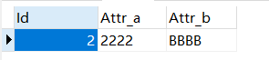
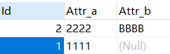
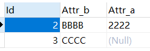

[CMU15445]:中级SQL
连接表达式
当在SQL查询语句中使用from子句包含多个表的时候，默认会使用笛卡尔乘积对多个表中的元组进行连接
对于这样一个查询来说
1 | |
迭代过程类似于下图

如果后面还使用了where子句的话，就会在此表的基础上进行过滤
一个典型的笛卡尔积关系如图

自然连接
自然连接的关键字是natural join，当两个表有着相同的属性名时，就可以对这两个表使用自然连接，自然连接仅会输出在这些相同属性上面有着相同取值的元组的连接，注意，是所有有着相同属性名的属性都必须完全相同
假设有如下SQL查询语句
1 | |
其中students表与takes表仅有相同的属性ID，那么上面的语句就可以被下面的自然连接语句所代替
1 | |
- join…using
仅当不同表中的元组在所有共同属性上的取值都相等时自然连接才会将其输出，可以使用join...using运算符来指定连接的属性
1 | |
上面的例子中会输出student与takes自然连接产生的中间结果与course在course_id连接产生的表
on子句
使用
on运算符可以在参与连接的关系上设置通用的谓词1
2
3select *
from student, takes
where student.Id = takes.Id;上述查询与下面的查询等价
1
2select *
from student join takes on student.Id = takes.Id
外连接
假设我们拥有两个表A, B, 它们拥有共同属性ID, A表中存在一些元组，它们与B表中的所有元组在ID属性上都匹配不上，同理，B表也是一样


如果对这两个表使用自然连接，那么就只会有一个条目

使用外连接会创建默认的空值，下面分别介绍几种外连接
左外连接(left join):只保留出现在左外连接运算之前的关系中的元组
即如果左边关系中有某些元组无法和右边任意一个元组匹配，那么为它添加一个空的右边的元组
1
2select *
from A natural left join B; -- from A natural outer left join B下面是输出结果

右外连接(right join)：只保留出现在右外连接之前的关系中的元组
即如果右边关系中有某些元组无法和左边任意一个元组匹配，那么为它添加一个空的左边的元组
1
2select *
from A natural right join B; -- from A natural outer right join B
全外连接(full join):是左外连接和右外连接的并集
貌似在mySql中没有实现
与其相对应，平时使用的普通连接又被称之为内部连接，也有一个inner关键字与其对应，只不过平时都直接省略了而已
1 | |
本博客所有文章除特别声明外，均采用 CC BY-SA 4.0 协议 ，转载请注明出处！